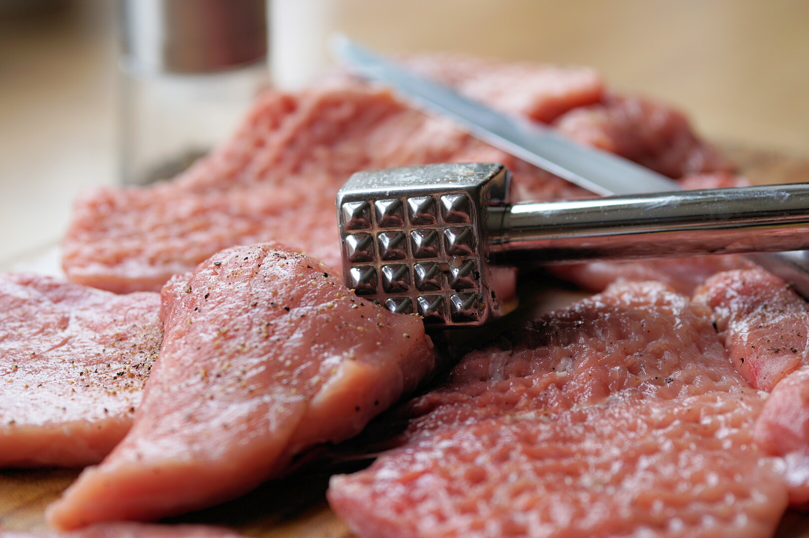

Kuřecí řízek
Klasikou českých Vánoc a nedělních obědů je křupavý kuřecí řízek v trojobalu. Pokud s vařením teprve začínáte a nejste si s postupem přípravy jistí, vyzkoušejte tento jednoduchý recept, podle kterého se vám řízky jistě povedou.
Suroviny pro 4 porce
Postup přípravy
Příprava masa
Maso nakrájíme na plátky. Poté ho z obou stran osolíme a opepříme.

Náhled videa ze zdroje: „Jak krájet maso na řízky“ Příprava obalovacích směsí
Připravíme 3 hluboké talíře. Do prvního vsypeme hladkou mouku, do druhého rozklepneme dvě nevařená vajíčka bez skořápky, přidáme mléko, špetku soli, trochu pepře a pořádně promícháme. Do třetího talíře nasypeme strouhanku.
Obalování řízků
Maso důkladně obalíme z obou stran v prvním talíři, pak ve druhém a nakonec ve třetím.
Dvojité obalování
Pro lepší konzistenci obalu je dobré postupovat tak, že obalíme v prvním, pak v druhém, pak zase prvním, zase v druhém a nakonec ve třetím talíři.
Smažení
Na pánev nalijeme dostatečné množství oleje, rozpálíme ho a řízky osmažíme.